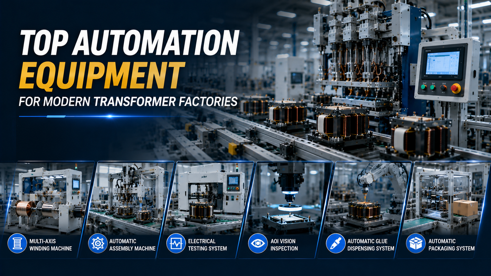

Top Automation Equipment Used in Modern Transformer Factories

Summary
Modern transformer manufacturing has evolved far beyond manual assembly and standalone winding machines. As demand continues to grow across electric vehicles, renewable energy, AI data centers, industrial power supplies, and energy storage systems, manufacturers are investing in intelligent automation to increase production capacity while maintaining consistent product quality.
Instead of purchasing individual machines independently, successful factories now build integrated production systems where every workstation works together seamlessly. This guide introduces the key automation equipment commonly used in modern high-frequency transformer factories and explains how each system contributes to productivity, quality, and long-term return on investment.
Technology
- High Frequency Transformer Manufacturing
- Automatic Winding Machine
- Multi-Axis Winding Technology
- Automatic Material Feeding
- Core Assembly Automation
- Precision Soldering
- AOI Vision Inspection
- Electrical Performance Testing
- Conveyor Automation
- Automatic Packaging
- MES Integration
- Smart Factory Solutions
Challenge
Many manufacturers begin factory expansion by purchasing equipment one machine at a time.
While this approach may reduce initial investment, it often creates long-term production challenges:
Equipment capacity does not match between processes.
Manual material transfer creates production bottlenecks.
Quality inspection remains disconnected from production.
Different equipment suppliers increase integration complexity.
Future expansion becomes more difficult.
Production data cannot be collected centrally.
As factories continue growing, isolated equipment often limits overall manufacturing efficiency.
The challenge is no longer selecting the "best machine," but designing the most efficient production system.
Solution
Modern transformer factories are built around integrated automation rather than standalone equipment.
Every production process should be connected through intelligent material flow, synchronized production capacity, and digital quality management.
Instead of asking "Which winding machine should I buy?", manufacturers should ask:
What production capacity is required?
Which products will be manufactured?
How will material flow through the factory?
How can future expansion be supported?
How should production data be managed?
Once these questions are answered, equipment selection becomes part of an overall factory strategy rather than an isolated purchasing decision.
Workflow & Layout
Raw Material Warehouse
↓
Automatic Material Feeding
↓
Multi-Axis Winding Machine
↓
Wire Processing
↓
Core Assembly
↓
Automatic Soldering
↓
Glue Dispensing
↓
Electrical Testing
↓
AOI Vision Inspection
↓
Laser Marking
↓
Automatic Sorting
↓
Packaging
↓
Finished Goods Warehouse
The highest-performing factories design production around continuous material flow rather than independent workstations.
Results & ROI
- Manufacturers implementing complete automation systems typically achieve:
- Higher equipment utilization
- Improved production balance
- Reduced work-in-process inventory
- Lower labor costs
- Improved product consistency
- Reduced rework and quality losses
- Higher daily production output
- Easier production scheduling
- Better long-term ROI through integrated manufacturing
- The greatest return comes from optimizing the entire production system instead of maximizing the performance of a single machine.
Equipment List
- A modern transformer factory typically includes:
- 1. Automatic Material Feeding System
- Delivers components continuously while reducing manual handling.
- 2. Multi-Axis Automatic Winding Machine
- The core production equipment responsible for high-speed
- high-precision transformer winding.
- 3. Wire Cutting & Lead Processing Machine
- Processes winding leads accurately before assembly.
- 4. Transformer Core Assembly Station
- Automatically assembles magnetic cores with consistent positioning and alignment.
- 5. Precision Soldering System
- Ensures stable electrical connections while reducing operator variation.
- 6. Glue Dispensing & Insulation Equipment
- Provides accurate insulation and mechanical protection.
- 7. Electrical Testing System
- Automatically verifies electrical performance before shipment.
- 8. AOI Vision Inspection
- Detects appearance defects and assembly errors using machine vision.
- 9. Automatic Conveyor & Transfer System
- Connects every workstation into one continuous production line.
- 10. Automatic Sorting & Packaging System
- Improves logistics efficiency while reducing manual handling.
- 11. MES Production Management System (Optional)
- Collects production data
- monitors equipment performance
- and enables full manufacturing traceability.
- 12. ASRS Warehouse System (Optional)
- Integrates finished goods and raw material storage with the production line
- reducing inventory handling time and supporting smart factory operations.
Project Overview / Opening
The competitiveness of a transformer factory depends not only on production capacity but also on how efficiently every manufacturing process works together.
Leading manufacturers are moving away from isolated equipment investments and instead designing integrated production systems that combine intelligent machinery, digital production management, and automated material handling.
This approach creates factories that are easier to expand, simpler to manage, and better prepared for future market demand.
Key Points
- Automation should be planned as a complete manufacturing system.
- Multi-axis winding remains the core production technology.
- Material flow is as important as equipment performance.
- Automated inspection improves quality consistency.
- MES enables digital production management.
- Conveyor automation reduces production interruptions.
- Smart warehouse integration supports higher operational efficiency.
- Choosing an experienced system integrator reduces project risk and simplifies future expansion.
Implementation / Workflow
A successful equipment investment begins with understanding production requirements rather than selecting individual machines.
Manufacturers first define annual output, product portfolio, factory layout, labor strategy, and expansion objectives.
Engineers then design an integrated production line where winding, assembly, soldering, testing, inspection, packaging, and logistics operate as one coordinated system.
Finally, digital manufacturing tools such as MES, ERP connectivity, and warehouse automation can be incorporated to provide real-time visibility into production performance and support continuous operational improvement.
Customer Value / Results
For factory owners and procurement teams, selecting the right automation equipment delivers benefits that extend well beyond production efficiency:
Lower total cost of ownership through optimized system integration
Reduced dependence on manual labor and easier workforce planning
Higher and more predictable product quality
Faster project commissioning and production ramp-up
Flexible manufacturing capable of handling multiple transformer models
Simplified maintenance with standardized equipment architecture
Better production visibility through digital management systems
Easier future expansion without disrupting existing operations
Stronger competitiveness in global electronics and power equipment markets
The most successful manufacturers invest in complete production capability rather than individual machines, creating factories that can adapt to changing customer demands for many years.
Conclusion / Next Step
Choosing automation equipment for a transformer factory is not simply a purchasing decision. It is a strategic investment that influences production efficiency, product quality, operating costs, and future scalability. The greatest value comes from integrating winding, assembly, testing, inspection, logistics, and digital management into one intelligent manufacturing system rather than treating each machine as an independent asset.
We help manufacturers worldwide design, source, integrate, and deliver industrial automation projects by leveraging China's manufacturing ecosystem. Whether you need a single production workstation, a complete high-frequency transformer production line, or a fully integrated smart factory solution with MES and ASRS, we provide end-to-end support from factory planning and equipment sourcing to system integration and project delivery.
Visit our Contact page to share your production requirements or submit an inquiry. Our team will work with you to recommend the most suitable automation equipment and develop a customized manufacturing solution that aligns with your production targets, budget, and long-term growth strategy.
SEO Title
Top Automation Equipment Used in Modern Transformer Factories
SEO Description
Modern transformer manufacturing has evolved far beyond manual assembly and standalone winding machines. As demand continues to grow across electric vehicles, renewable energy, AI data centers, industrial power supplies, and energy storage systems, manufacturers are investing in intelligent automation to increase production capacity while maintaining consistent product quality.
Instead of purchasing individual machines independently, successful factories now build integrated production systems where every workstation works together seamlessly. This guide introduces the key automation equipment commonly used in modern high-frequency transformer factories and explains how each system contributes to productivity, quality, and long-term return on investment.
Related Blog
Start with Your Business Challenge
Tell us about your warehouse, factory, or production requirements. We'll help you explore practical automation solutions and relevant project references.